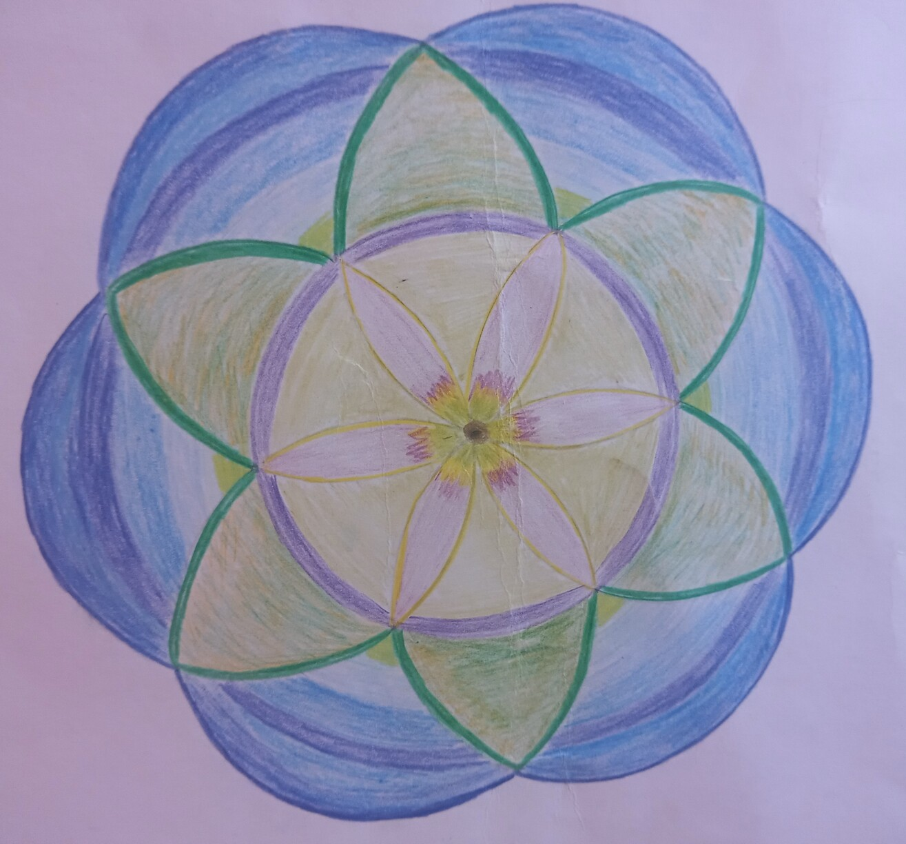

Silvia Pinchas

סילביה פנחס
מנחת סדנאות לציור מנדלות



מנדלה היא מעגל שבתוכו מהות. כמו חיינו, יש בה אפשרויות רבות של ביטוי – אנחנו יכולים להיות כל כך הרבה דברים, ומתמודדים עם הגבולות והמגבלות של המציאות, זו שבתוכנו וזו שמחוץ לנו. בהתחלה אנחנו מציירים תבנית, שיוצרת מסגרת וגבולות. היא עוצרת ומגבילה, אבל גם שומרת ומרגיעה. גרעין המנדלה (הבינדו) מייצג את הליבה שלנו, את הפוטנציאל של כל מה שאפשר לחוש ולהיות. מתוכו אנחנו מתחילים לצבוע, החוצה אל המעגל, מתוך הקשבה לתחושות ולרגשות שעולים בנו, לפעמים מתוך שקיעה לשקט פנימי, לפעמים סערה. אנחנו יוצרים ציורי מנדלות ומאפשרים לעצמנו לטייל לתוך מרחב נפשי עמוק יותר, אל פגישה עם מקומות אחרים בתוכנו. בהתחלה אנחנו מציירים תבנית, שיוצרת מסגרת וגבולות. היא עוצרת ומגבילה, אבל גם שומרת ומרגיעה. גרעין המנדלה (הבינדו) מייצג את הליבה שלנו, את הפוטנציאל של כל מה שאפשר לחוש ולהיות. מתוכו אנחנו מתחילים לצבוע, החוצה אל המעגל, מתוך הקשבה לתחושות